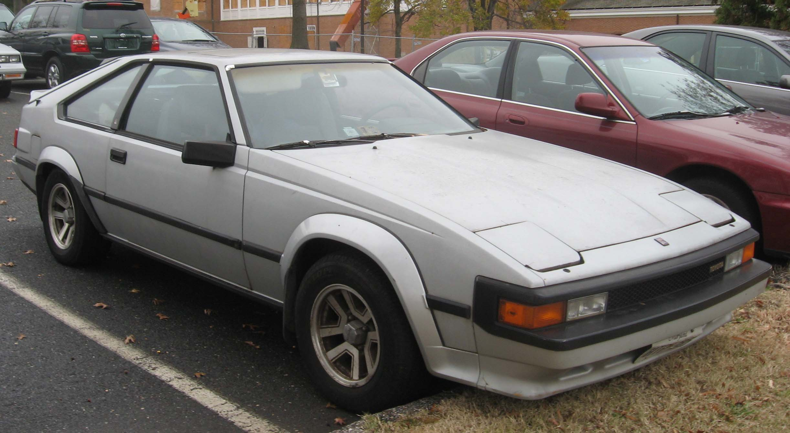
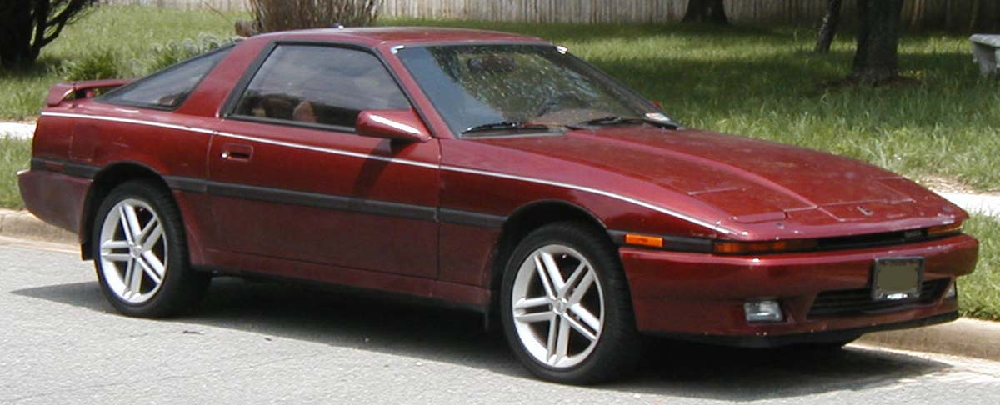
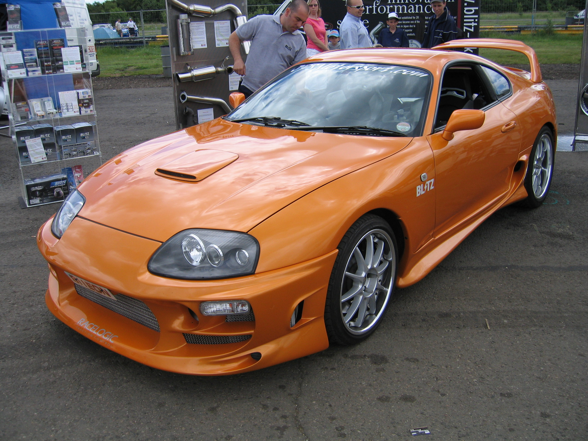
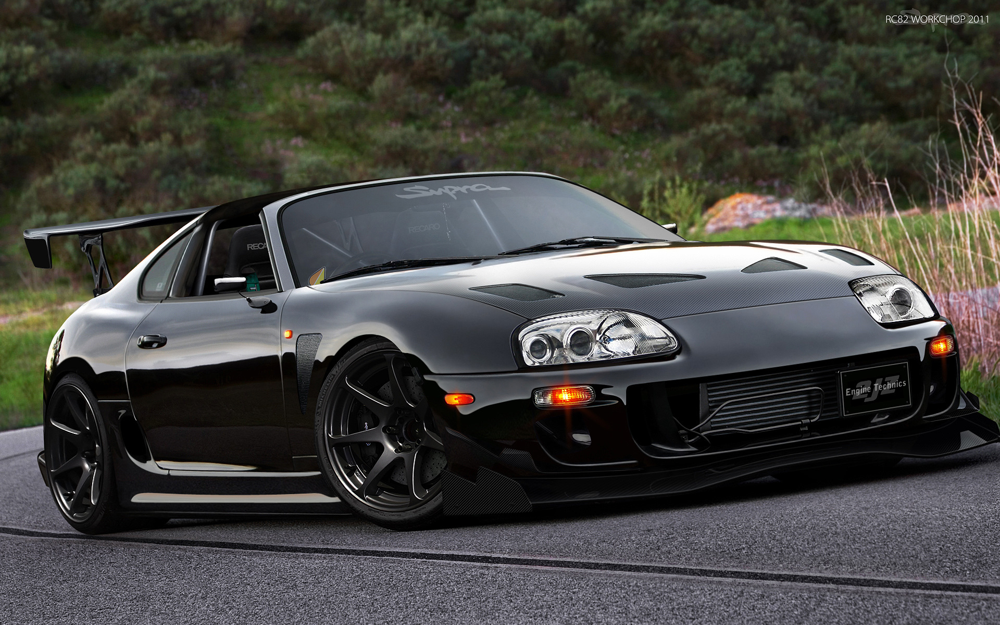
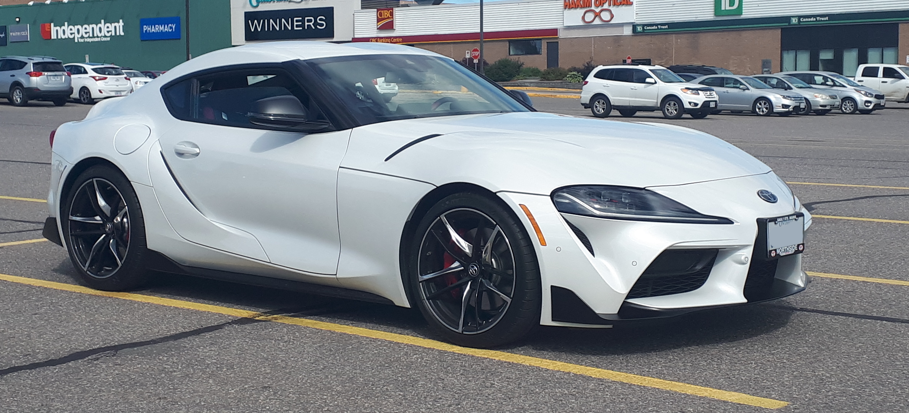

Toyota Supra
Перше покоління (A40/A50; 1978–1981)
 Автомобіль Toyota Celica Supra Mk I випускався з 1979 по 1981 рік. Перше покоління Toyota Supra значною мірою базувалося на Toyota Celica liftback, але Supra була на 5,1 дюйма довшою (двері і задня секція такі ж як у Toyota Celica, а передня частина відрізняється). Найбільш важливо, те що двигун Celica з 4 циліндрами був замінений на 6 циліндровий. Початковий план Toyota щодо Supra в цей час перебував в тому, щоб зробити автомобіль конкурентний до дуже популярного Datsun 240Z. Toyota Supra Mk I 1979 року (на японському ринку у 1978 році) спочатку була обладнана 6 циліндровим двигуном 4М-Е об'ємом 2,6 літрів і потужністю 110 к.с. (82 кВт), який був першим інжекторним двигуном виробництва Toyota. У 1981 році автомобіль Supra отримав двигун 5М-Е обсягом 2,8 літра (код шасі МА47) з потужністю 116 к.с. (87 кВт) і моментом, 197 Нм. У Японії також був доступний автомобіль з двигуном об'ємом 2,0 літра EC (код шасі МА45) і також був можливий варіант з двигуном М-TEU turbo. Усі наступні варіанти Supra Mk I були обладнані або 5 ступінчастою коробкою передач (W50), або 4-х швидкісний автоматичною коробкою. Toyota Supra Т серії зберегла від Celica конфігурацію задньої осі в моделях версії МА45 і великою F серії у версіях МА46 і МА47.
Автомобіль Toyota Celica Supra Mk I випускався з 1979 по 1981 рік. Перше покоління Toyota Supra значною мірою базувалося на Toyota Celica liftback, але Supra була на 5,1 дюйма довшою (двері і задня секція такі ж як у Toyota Celica, а передня частина відрізняється). Найбільш важливо, те що двигун Celica з 4 циліндрами був замінений на 6 циліндровий. Початковий план Toyota щодо Supra в цей час перебував в тому, щоб зробити автомобіль конкурентний до дуже популярного Datsun 240Z. Toyota Supra Mk I 1979 року (на японському ринку у 1978 році) спочатку була обладнана 6 циліндровим двигуном 4М-Е об'ємом 2,6 літрів і потужністю 110 к.с. (82 кВт), який був першим інжекторним двигуном виробництва Toyota. У 1981 році автомобіль Supra отримав двигун 5М-Е обсягом 2,8 літра (код шасі МА47) з потужністю 116 к.с. (87 кВт) і моментом, 197 Нм. У Японії також був доступний автомобіль з двигуном об'ємом 2,0 літра EC (код шасі МА45) і також був можливий варіант з двигуном М-TEU turbo. Усі наступні варіанти Supra Mk I були обладнані або 5 ступінчастою коробкою передач (W50), або 4-х швидкісний автоматичною коробкою. Toyota Supra Т серії зберегла від Celica конфігурацію задньої осі в моделях версії МА45 і великою F серії у версіях МА46 і МА47.
Двигуни
1,988 л M-EU Р6 123 к.с.
2,563 л 4M-E Р6 110 к.с.
2,759 л 5M-E Р6 116 к.с.
Друге покоління (A60; 1981–1986)
 Автомобіль Toyota Celica Supra Mk II випускався з 1982 по 1986 рік. Хоча ім'я Celica ще використовувалося, але в другому поколінні назва Supra означало і важило більше імені Celica. Mk II для різних країн комплектувався різними двигунами. Деякі моделі (для Швеції, Швейцарії та Австралії) зберегли двигун МК 1 5M-E, в той час як у Японії MK2 (MA 63) пропонувався на вибір з турбінним двигуном SOHC М-TE або 2-літровим 1G-GTE (GA61). Також в Японії 1985 рік був кінцем для MK 2, але затримки випуску МК 3 до кінця 1985 року призвели до появи МК 2s, що пропонується для продажу в першій половині 1986 року. Це були моделі 1985 з незначними косметичними змінами. МК 2 йшов під маркою Celica XX, деякі автомобілі комплектувалися двигуном 2.0L 1G-GEU, так як податки були нижчими на двигуни з меншим об'ємом. Як правило двигуни призначені не для Америки 5M-GE's мали потужність 170 к.с (127 кВт), в той час складовими дизайном швидко став популярним і мав великий успіх у США, де став імпортним автомобілем року на Motor Trend. Також автомобіль був занесений в десятку найкращих журналами «Car» і «Driver» в 1983 і 1984 роках. У США двигун SOHC 2.8L 5M-E був замінений на DOHC 2.8L 5M-GE. МК2 пропонувався в 2 варіантах: Р тип (варіант для роботи) і L тип (люксовий варіант). Вони були диференційовано доступні і відрізнялися дизайном кузова, розмірами коліс і шин. Обидва пропонувалися або з W58 5-швидкісною ручною коробкою передач, або з A43DL (тільки в 1982 році) / A43DE (у 1983—1986 роках) 4-швидкісною автоматичною коробкою передач. Як додаток до чудового двигуна, дизайн Supra був спеціально розроблений у Lotus.
У всьому світі МК 2 комплектувався різними двигунами. Деякі моделі (послані країнам подібно Швеції, Швейцарії та Австралії) зберегли двигун МК 1 5M-E, в той час як у Японії MK2 (MA 63) пропонувався на вибір з турбінним двигуном SOHC М-TE або 2-літровим 1G-GTE (GA61). Також в Японії, де МК 2 йшов під маркою Celica XX, деякі автомобілі комплектувалися двигуном 2.0L 1G-GEU, так як податки були нижчими на двигуни з меншим обсягом. Як правило двигуни призначені не для Америки 5M-GE's мали потужність 170 к.с (127 кВт), у той час як версія автомобіля для американського ринку оснащувалася двигуном потужністю 145 к.с. (108 кВт) і була суворішою, щоб виконати вимоги емісії. У 1984 і 1985 американські моделі мали потужність 165 к.с. (123 кВт) і компресію 9.2:1 проти колишніх 8.8:1. 1985 був кінцем MK 2, але затримки випуску МК 3 до кінця 1985 року призвели до появи МК 2s, що пропонується для продажу в першій половині 1986 року. Це були моделі 1985 з незначними косметичними змінами. Популярною заміною МК2 з двигуном версії 5M-GE став автомобіль з двигуном 6M-GEU потужністю 190 к.с. (142 кВт). Цей двигун ніколи не був доступний в моделі МК 2 і пропонувався тільки в моделях автомобілів Toyota Crown і Toyota Chaser.
Двигуни
1,988 л M-TEU Р6 Turbo 145-160 к.с.
1,988 л 1G-EU Р6 125 к.с.
1,988 л 1G-GEU Р6 160 к.с.
2,759 л 5M-E Р6 145 к.с.
2,759 л 5M-GE Р6 145-178 к.с.
Третє покоління (A70; 1986–1993)
 У середині 1986 року Toyota був готовий випустити наступну версію Supra. Зобов'язання між Celica і Supra були зняті, тепер це були дві зовсім різні моделі. Celica змінила тягові колеса на передні, в той час як Supra зберегла ведучими задні колеса. Хоча A60 (МК II) і A70 (МК III) подібні проекти, але атмосферний двигун об'ємом 3.0 л 7M-GE став потужніший. Турбована версія двигуна (7M-GTE turbo) представлена в 1987 році. На моделях з атмосферним двигуном встановлювалася механічна коробка передач W58, версії з турбонаддувом отримали більш надійну механічну коробку передач R154. Обидві версії були доступні також з 4-ступінчастою автоматичною коробкою передач A340E з 4 швидкостями.
Протягом 1989 року, автомобіль змінив свій дизайн кузова і став більш елегантним і спортивним. У 1988 році була представлена модель Turbo-A, це був спеціальний проект, націлений на перемогу в Group-A на автомобільних чемпіонатах в усьому світі. Всього було випущено тільки 500 Turbo-A. Turbo-A був оснащений спеціальним двигуном 7M-GTEU потужністю 263 к.с. (196 кВт), що робило його найшвидшим японським дорожнім автомобілем, до тих пір, поки не був представлений Nissan Skyline R32-GTR.
Третє покоління Toyota Supra включало багато нових технології. У 1986 році автомобіль Supra був вже обладнаний ABS, TEMS (Toyota Electronically Modulated Suspension). До 1990 року повітряні камери стали стандартними.
Загальна кількість випущених Supra A70 (GA70/MA70/JZA70) становить 241 471 автомобілів.
Двигуни
1,988 л 1G-GEU Р6 160 к.с.
1,988 л 1G-GTE twin-turbo Р6 205 к.с.
2,491 л 1JZ-GTE twin-turbo Р6 276 к.с.
2,954 л 7M-GE Р6 200 к.с.
2,954 л 7M-GTE turbo Р6 230 к.с.
Четверте покоління (A80; 1993–2002)


Історія цієї моделі почалася 24 травня 1993 року, коли з'явилася перша машина з новим кузовом А80. Моторів було два: 3 літри з двома турбінами (2JZ-GTE) і без турбін (2JZ-GE). У атмосферному варіанті двигун розвивав 225 к.с. і 290 Нм, а варіант «твін-турбо» — 280 (модель для ринку Японії), 324 (варіант для Північної Америки), або ж 330 к.с. (модель для європейського ринку). Покупцеві пропонувалося на вибір дві КПП: 6-ступ. МКПП і 4-ступ АКПП і два кузова: купе або тарга. Машина оснащувалася АБС, протибуксувальною системою, кондиціонером, автоматичним переднім спойлером (аналог «Active Aero» на Mitsubishi 3000 GT), електросклопідіймачами, а деякі модифікації — шкіряними сидіннями з електроприводом. У 1997 р. останній серйозний рестайлінг торкнувся крім деяких елементів екстер'єру двигуна. Двигуни отримали систему фаз газорозподілу «VVT-I» (аналог VTEC або VANOS) і додаткові 20 Нм крутного моменту.
Відмінну динаміку гальмування забезпечували гальмівні механізми розмірністю 323х30 мм спереду і 324х16 мм ззаду, Гума розмірністю 255/40R 17 ззаду і 235/45 R 17 спереду. Також з'явилася нова підвіска з революційною на той час системою контролю положення кузова REAS (Relative Absorber System). А ось власники автомобілів з АКПП могли порадувати себе системою перемикання передач кнопками на кермі. За 8 років, поки автомобіль сходив з конвеєра, машина отримала багато нагород у всіляких «Touring Championships» і навіть встигла знятися в головній ролі у фільмі «Fast and Furious» (в українському прокаті «Форсаж»).
Цікавий той факт, що гоночний автомобіль японської кільцевої команди «Toyota Castrol TEAM TOM S», що виступав у класі GT, ніс під капотом «3S-GTE» від Toyota Celica потужністю 470 к.с. при обсязі 2 л. Хоча «Toyota Team SARD» і підготувала 450-сильну версію стандартного мотора «2JZ-GTE», все ж таки було прийнято рішення щодо заміни мотора, щоб зменшити вагу машини. Шестициліндровий же двигун з чавунним блоком ніяк не сприяв максимального зниження маси машини.
У 1999 р. «JUN Auto-Mechanic» і «Blitz Tuning» представили широкій громадськості свої версії «Супра». У першому варіанті машина з робочим об'ємом 3,2 л. (Замінений колінвал, поршні і шатуни) розвивав 918 к.с. і 1100 Нм крутного моменту. Максимальна швидкість — понад 300 км / год, для перемикання використовувалася 6 — ступенева секвентальна КПП. Знаменита «Supra» від «Blitz», яка поставила рекорд проходження кола на Нюрбургринзі (7 хв 53сек) поскромніше — 615 к.с. і 770 Нм крутного моменту. Крім бодікіта, який забезпечував стабільну поведінку машини на великих швидкостях і каркаса безпеки з гоночними сидіннями, машина отримала найпотужніші гальма «Brembo», дві величезні турбіни «KKK K26 2670», чотири паливних насоса, величезний масляний радіатор і багато іншого.
Виробництво моделі Toyota Supra було припинено в 2002 р. через низький попит.
Унікальний тюнінгований екземпляр Toyota Supra A80 під назвою Top Secret[2][3] було створено одним із співробітників японського ательє GReddy[en]. Трилітровий двигун 2JZ-GTE був замінений на п‘ятилітровий 1GZ-FE. Два турбонагнітача HKS та система подачі закису азота підняли потужність до 943 к.с. та 1010 Нм. Були замінені КПП та підвіска, а кузов був значно модернізований. Максимальна швидкість цього авто була зареєстрована на італійській трасі Нардо: 358,22 км/год.
Двигуни
2,997 л Toyota 2JZ-GE Р6 220 к.с.
2,997 л Toyota 2JZ-GTE Р6 Twin-turbo 280, 324, 330 к.с.
П'яте покоління (A90; 2019–)
 В першій половині 2019 року дебютувала нова Toyota Supra. Нова Тойота Супра в профіль майже не відрізняється від концепт-кара Toyota FT-1 2014 року. Авто досягає 4380 мм в довжину, 1830 мм в ширину і 1280 мм у висоту при колісній базі в 2470 мм. Маса купе становить 1350-1430 кг, в залежності від версії. Toyota GR Supra побудована на новій платформі Cluster Architecture (CLAR), розробленої спільно інженерами Тойота і БМВ. Цю ж архітектуру буде використовувати і новий родстер BMW Z4. В рух Супру буде приводити рядна турбо шістка 3.0 л від BMW з віддачею приблизно 340 к.с., 8-ст. автоматична КПП виробництва ZF, задній привод, блокування диференціала та регульовані амортизатори.
Крім того, буде запропонований гібридний варіант на базі одного з баварських двигунів.
Спорткар буде випускатися в Австрії на заводі Magna Steyr.
У 2021 році Toyota помітно оновила модель Supra. Автомобиль отримав нову комплектацію з турбодвигуном потужністю 255 к.с. та підвищену до 382 к.с. продуктивність 3-літрового силового агрегату
Двигуни
2,0 л B48B20 Р4 turbo 197 к.с. 320 Нм
2,0 л B48B20 Р4 turbo 258 к.с. 400 Нм
3,0 л B58B30 Р6 turbo 340 к.с. 500 Нм
3,0 л B58M30O1 Р6 turbo 387 к.с. 500 Нм